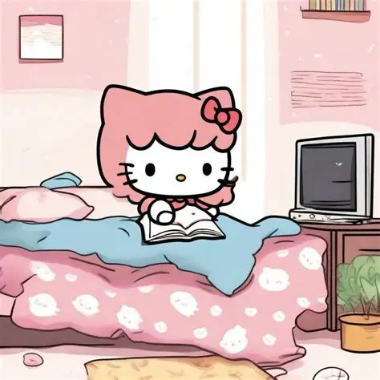

Uno de mis pasatiempos favoritos es escuchar música. Me gusta escuchar diferentes canciones en mi tiempo libre, especialmente cuando estoy realizando otras actividades.

También disfruto ver películas y series en mi tiempo libre. Es una forma de entretenerme y descansar después de estudiar.

Me gusta compartir tiempo con mis amigos, conversar y disfrutar diferentes actividades juntos.